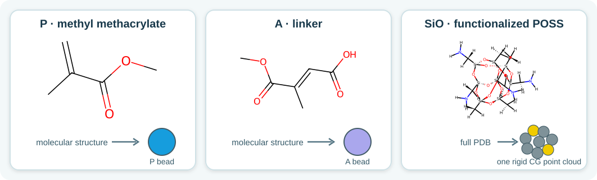
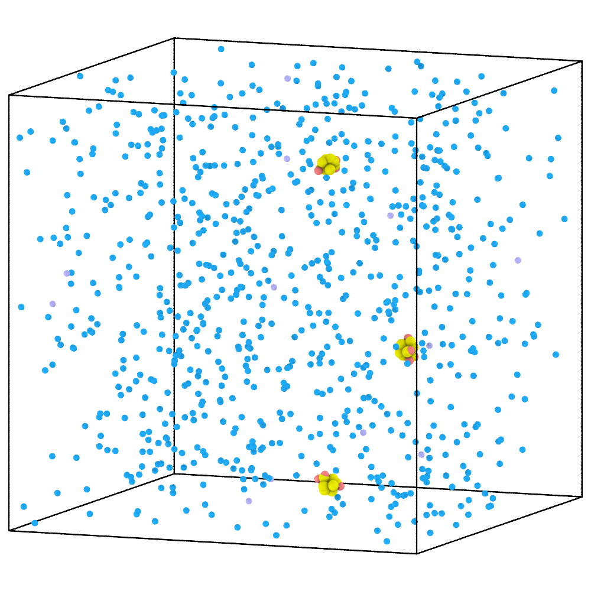
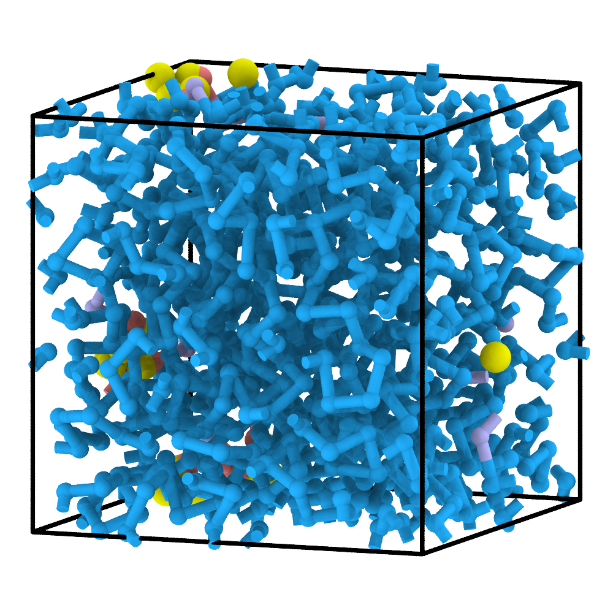
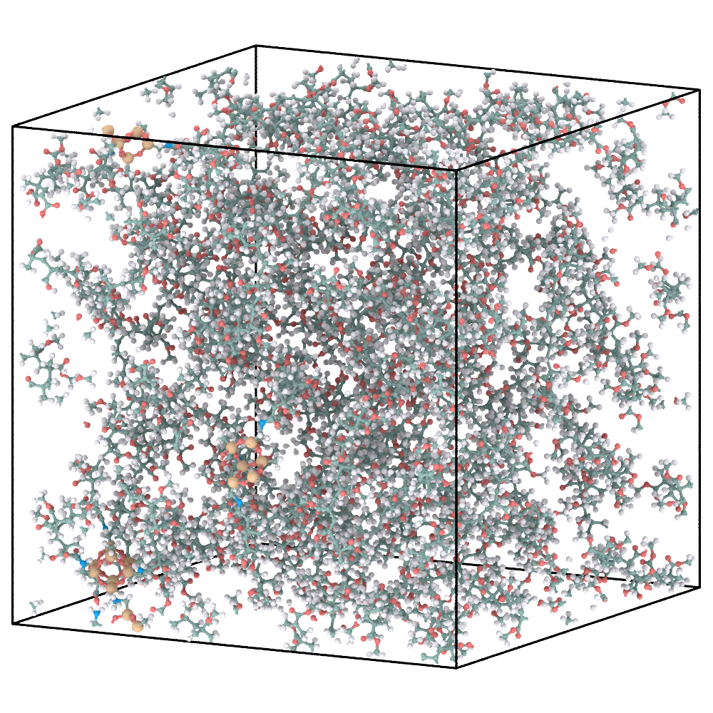

4. POSS-PMMA: map reactions onto a structured component¶
This example combines free molecular reactants with a functionalized POSS structure supplied as an atomistic PDB file.
1. Define the molecular and structured reactants¶
P and A are free molecular reactants. POSS is shown as the complete
structured component and is represented at CG resolution by one rigid point
cloud. Its local CN SMARTS is used only to locate reactive arms and is
therefore not drawn as a separate molecule.
{kind=link}

Free reactants and the complete structured POSS component.¶
{
"domd_react_dsl": "v1",
"box_tensor": [20,20,20],
"reactants": [
{
"name": "P",
"smiles": "C=C(C(=O)OC)C",
"N": 800,
"activate": 0,
"max_valence": 2
},
{
"name": "A",
"smiles": "OC(=O)C=C(C(=O)OC)C",
"N": 12,
"activate": 0,
"max_valence": 2
},
{
"name": "CN",
"smarts": "[N:1]([H:2])[H:3]",
"N": 0,
"max_valence": 1,
"activate": 12
}
],
"fillers": [
{
"name": "SiO",
"N": 3,
"file": "POSS.pdb",
"mappings": [
{
"cg_id": 0,
"type": "CN",
"atom_idx": [
0,
32,
33
]
},
{
"cg_id": 1,
"type": "CN",
"atom_idx": [
23,
38,
39
]
},
{
"cg_id": 2,
"type": "CN",
"atom_idx": [
28,
51,
52
]
},
{
"cg_id": 3,
"type": "CN",
"atom_idx": [
31,
58,
59
]
}
],
"filler_idx": [0,1,2]
}
],
"reactions": [
{
"name": "P-P",
"kind": "radical",
"reactants": ["P", "P"],
"smarts": "[C:1]=[C;H0:2].[CH2;$([CH2]=[C;H0]):3]>>[C:1][C:2][CH1:3]",
"prod_idx": [
0
],
"intrinsic_probability": 1.0,
"activation": {
"from": 0,
"to": 1
}
},
{
"name": "CN-A",
"kind": "radical",
"reactants": ["CN", "A"],
"smarts": "[N:1][H:5].[OH1:2][C:3]=[O:4]>>[N:1][C:3]=[O:4].[O:2][H:5]",
"prod_idx": [
0
],
"intrinsic_probability": 1.0,
"activation": {
"from": 0,
"to": 1
}
},
{
"name": "A-P",
"kind": "radical",
"reactants": ["A", "P"],
"smarts": "[CH1:1]=[C;H0:2].[CH2;$([CH2]=[C;H0]):3]>>[CH2:1][C:2][CH1:3]",
"prod_idx": [
0
],
"intrinsic_probability": 1.0,
"activation": {
"from": 0,
"to": 1
}
}
],
"cg_topology_file": "reaction_final.xml",
"reaction_path_file": "reaction_path.txt"
}
Each POSS copy contains four mapped CN arms. The PDB provides the full
reference geometry, while each atom_idx list identifies one reactive group.
Three POSS copies therefore supply 12 arms, matching activate: 12. The
CN-A, A-P, and P-P radical rules transfer activity from the surface
into the growing PMMA chain.
2. Construct and relax the CG hybrid¶
python prepare_cg.py 05_poss_pmma
cd 05_poss_pmma/cg
python run_pygamd_polymerization.py initial.xml cg_parameters.json --gpu=0
cd ../..
Initial CG mixture |
Polymerized and pre-equilibrated CG hybrid |
|---|---|
 |
 |
The rigid point cloud preserves the geometry of each POSS component while its mapped arms enter the same reaction-selection pools as compatible free reactants.
3. Reconstruct the atomistic hybrid¶
python reconstruct_aa.py 05_poss_pmma
Final CG hybrid |
Energy-minimized AA reconstruction |
|---|---|
 |
Rigid-body alignment restores each full PDB structure at its CG position. ReactionPath replay then applies the recorded surface reactions to the mapped PDB atoms and the attached molecular fragments.
4. AA output: energy minimization only¶
Energy-minimized AA model |
Equilibrated AA model (not supplied) |
|---|---|
See AA relaxation for the general GROMACS workflow. The
supplied archive stops after energy minimization for this case and contains
no equilibrated coordinates or aa_final.png. Run a validated AA protocol and
replace the right-hand panel with its final configuration before presenting an
equilibrated result.
What to inspect¶
every POSS copy contains all four intended mapped arms;
the mapped atom indices identify the intended groups in the full PDB;
each structured component remains one rigid CG body;
reconstructed surface bonds involve the correct PDB atoms;
topology, coordinates, and force-field files describe the same hybrid system.
Next: Multicomponent SPE.